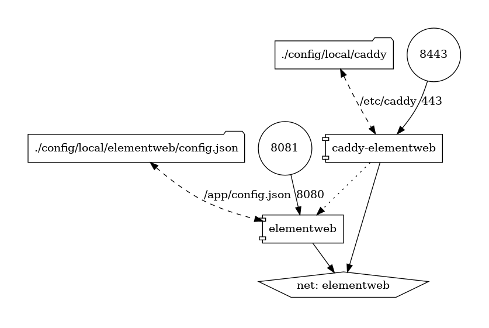
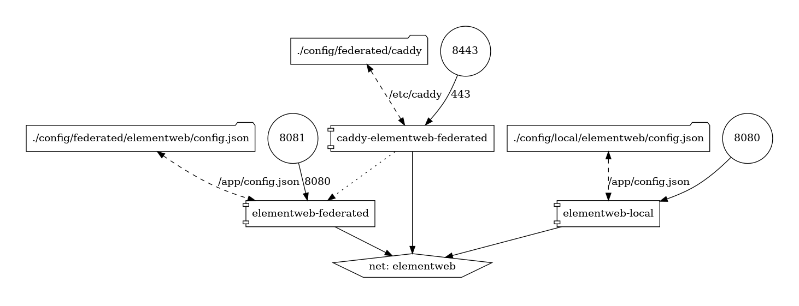
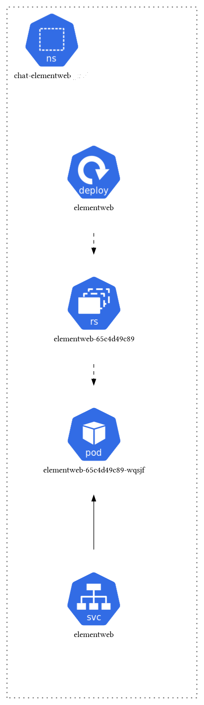

Eclipse Foundation - Elementweb Implementation
[[TOC]]
Getting started locally
prerequisite
Set local domain name in /etc/hosts:
127.0.0.1 matrix-local.eclipse.org chat-local.eclipse.org matrix-media-repo-local.eclipse.org synapse-admin-local.eclipse.org
127.0.0.1 matrix-federated.eclipse.org chat-federated.eclipse.org matrix-media-repo-federated.eclipse.org synapse-admin-federated.eclipse.org
Local start
docker-compose up -d
Browser access: https://chat-local.eclipse.org:8443
IMPORTANT: matrix must be start! see: Synapse local start

Local federated start
docker-compose -f docker-compose-federated.yaml up -d
Browser access: https://chat-local.eclipse.org:8443
Browser access: https://chat-federated.eclipse.org:8443
IMPORTANT: matrix servers must be start! see: Synapse local federated start

Installation and Configuration in kubernetes cluster
Kubernetes architecture

New Environment
tk env add environments/chat-elementweb/{env} --namespace=chat-elementweb-{env}
Add this property in spec.json:
{
...
"apiServer": "https://my_cluster",
"injectLabels": true
...
}
main.jsonnet template:
(import "chat-elementweb/main.libsonnet") +
{
_config+:: {
environment: "dev",
elementweb+: {
replicas: 1,
config+:{
"broadcast": "Eclipse foundation chat service 'DEV' environment",
},
},
}
}
Devops
Generate secrets
Execute: ./gen-secrets.sh
It will store secrets under: /environments/chat-elementweb/{env}/.secrets
tanka
see doc installation tanka: https://tanka.dev/install
tk show "environments/chat-elementweb/dev"
tk apply "environments/chat-elementweb/dev"
Exporting kubernetes files:
tk show --dangerous-allow-redirect "environments/chat-elementweb/dev" > ./k8s/chat-elementweb-dev.yaml
Apply.sh script
Allow to run tanka and apply modification with kubectl for an environment.
./apply.sh {env}
Upgrade
Check changelog
First check changelog, ex: https://github.com/vector-im/element-web/releases/tag/v1.11.30
Look at :
* feature namming changes, ex with: feature_threadestable change to feature_threadenabled
* Dockerfile changes: https://github.com/vector-im/element-web/blob/v1.11.30/Dockerfile
Configuration changes should be apply in this configuration file: /lib/chat-elementweb/element-web/config-app.libsonnet.
Upgrade version
Check version and look for github branch tags: https://github.com/vector-im/element-web/tree/v1.11.30
And apply change in docker image file: /docker/Dockerfile.element-web
ARG ELEMENT_BRANCH="v1.11.29"
Commit with message: feat: upgrade to elementweb 1.11.30
gitmoji: ⬆️ - Upgrade dependencies.
Push/Wait for CI building elementweb image and apply changes in kubernetes: ./apply.sh {env}
Development
Reuse lint
docker run -v $PWD:/data fsfe/reuse:latest lint
Docker-compose render
docker run --rm -it --name dcv -v $(pwd):/input pmsipilot/docker-compose-viz render -m image docker-compose.yaml
k8s render
./k8sviz.sh -n chat-matrix-prod -t png -o k8s-architecture.png
Debug configuration
ex: type in browser console for feature feature_exploring_public_spaces
mxSettingsStore.debugSetting('feature_exploring_public_spaces')
output:
--- DEBUG feature_exploring_public_spaces rageshake.ts:64:12
--- definition: {"displayName":"Explore public spaces in the new search dialog","supportedLevels":["device","config"],"default":false} rageshake.ts:64:12
--- default level order: ["device","room-device","room-account","account","room","config","default"] rageshake.ts:64:12
--- registered handlers: ["device","room-device","room-account","account","room","platform","config","default"] rageshake.ts:64:12
--- device@<no_room> = true rageshake.ts:64:12
--- room-device@<no_room> = null rageshake.ts:64:12
--- room-account@<no_room> = undefined rageshake.ts:64:12
--- account@<no_room> = undefined rageshake.ts:64:12
--- room@<no_room> = undefined rageshake.ts:64:12
--- platform@<no_room> = undefined rageshake.ts:64:12
--- config@<no_room> = null rageshake.ts:64:12
--- default@<no_room> = false rageshake.ts:64:12
--- calculating as returned by SettingsStore rageshake.ts:64:12
--- these might not match if the setting uses a controller - be warned! rageshake.ts:64:12
--- SettingsStore#generic@<no_room> = true rageshake.ts:64:12
--- SettingsStore#device@<no_room> = true rageshake.ts:64:12
--- SettingsStore#room-device@<no_room> = false rageshake.ts:64:12
--- SettingsStore#room-account@<no_room> = false rageshake.ts:64:12
--- SettingsStore#account@<no_room> = false rageshake.ts:64:12
--- SettingsStore#room@<no_room> = false rageshake.ts:64:12
--- SettingsStore#config@<no_room> = false rageshake.ts:64:12
--- SettingsStore#default@<no_room> = false rageshake.ts:64:12
--- END DEBUG rageshake.ts:64:12